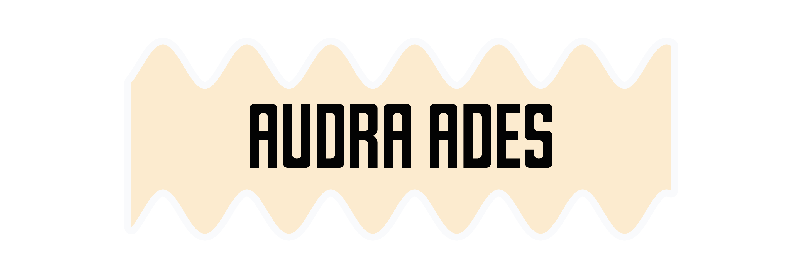
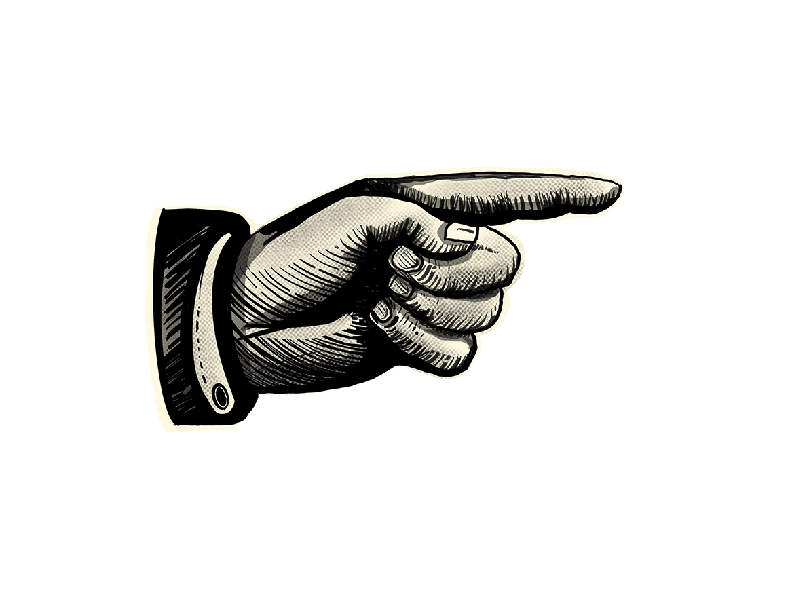
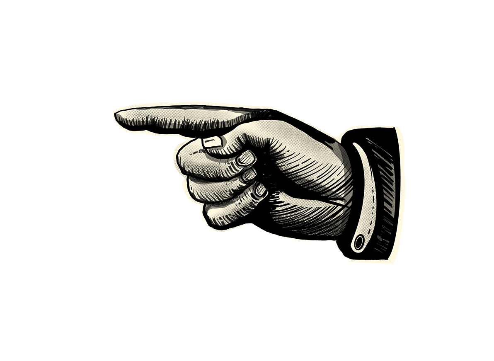

EXTRA! EXTRA!



Audra is an experienced artist and designer with strengths in many different creative fields. She studied both studio art and User experience design where she developed a wide range of skills such as leadership and responsibility as the vice president of the San Jose State glass blowing guild, as well as attention to detail and empathy for users through reorganizing websites and creating platforms that focus on usability. During her time in school she worked in the service industry as a bartender where she caught the attention of corporate executives and earned an internship with a major brewery. The internship resulted in a part time role with the ABV graphic design department. While working part time she had the opportunity to design a beer can label, several marketing graphics, sales tools, tap stickers, website visuals, etc. for Victory Brewing Co and associated breweries within the Artisanal Brewing Ventures family. Audra is eager to continue expanding as a designer and determined to reach her potential in the industry by exploring new software in her freetime and accepting every creative project that comes her way.